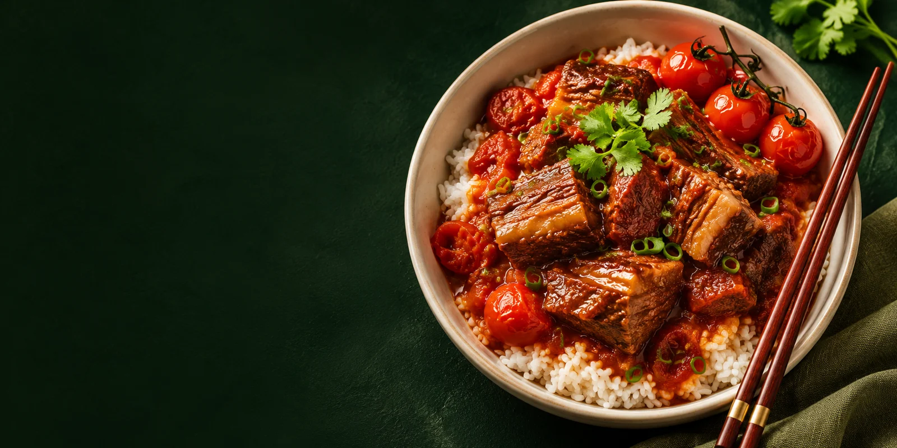

跳到菜品
饭点见
校园食堂点评
发现菜品
避雷指南
我的收藏
青禾大学
演示校区
今天食堂
吃点什么？
看同学点评，找今天想吃的那一道。
去找好吃的
帮我选一道

新菜上架
番茄牛腩饭
一食堂 · 一楼 03 窗口
发现菜品
按口味和预算，找到今天想吃的一餐。
搜索菜名、食堂或窗口
全部
新菜上架
口碑推荐
避雷指南
食堂
全部食堂
一食堂
二食堂
三食堂
预算
不限预算
¥12 以内
¥15 以内
¥20 以内
辣度
不限辣度
不辣
微辣
中辣
排序
为你推荐
评分最高
价格最低
点评最多
请启用 JavaScript 后查看菜品和点评。